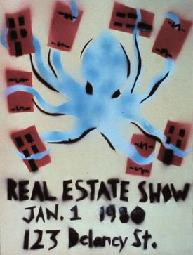
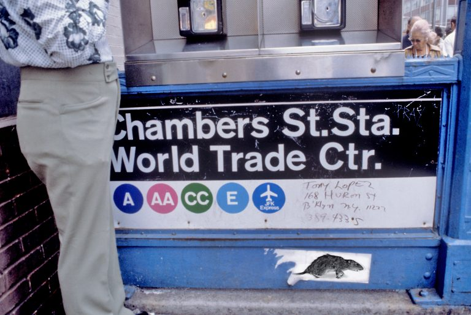
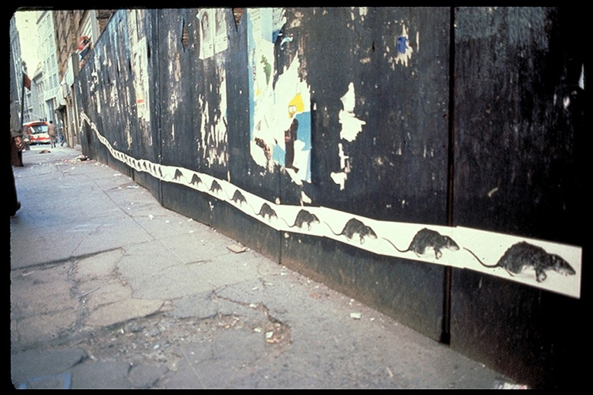
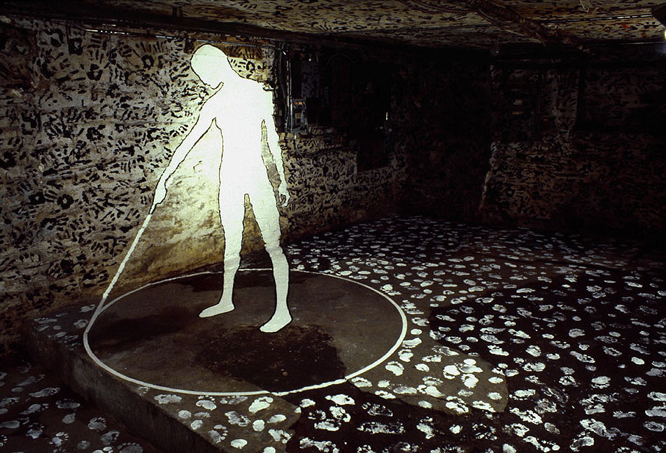
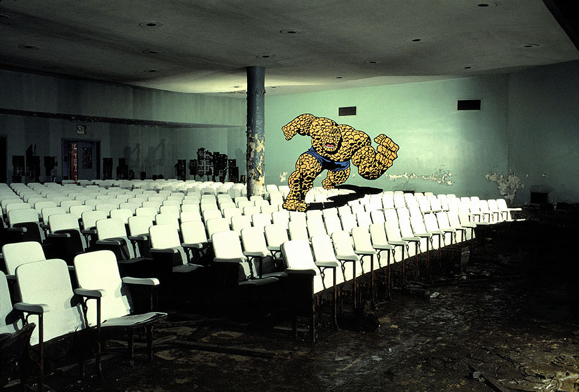
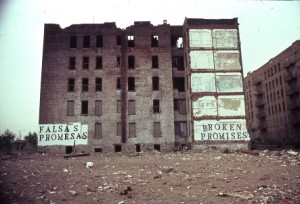
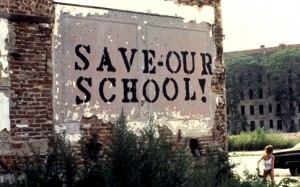
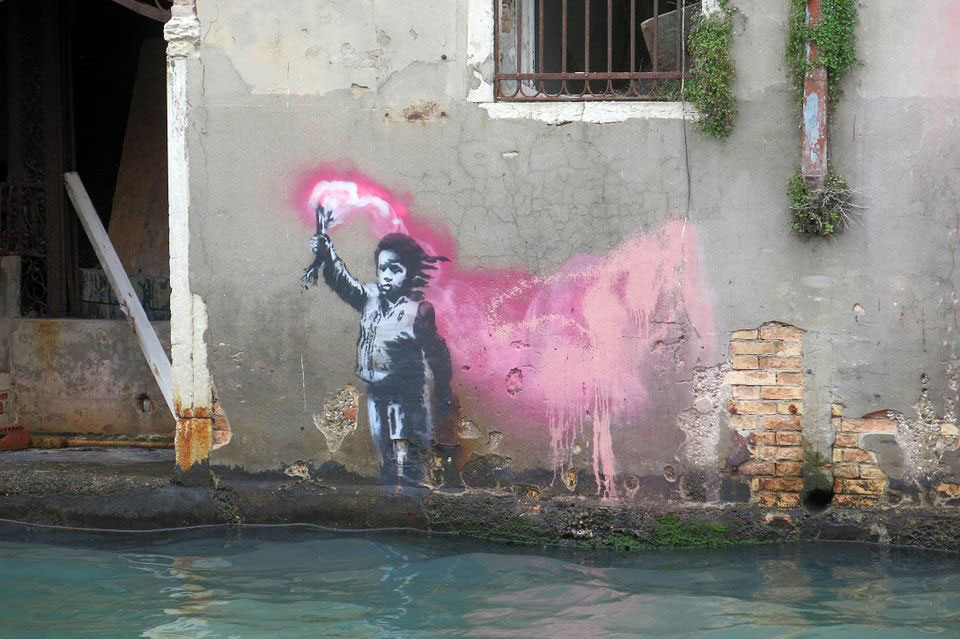
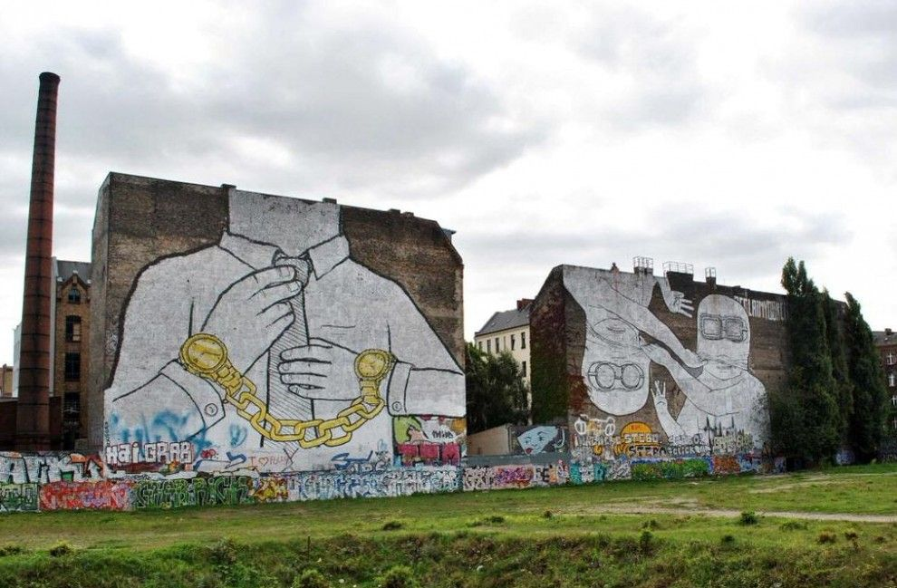
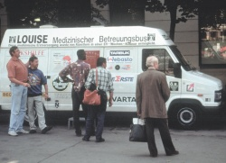

La resistenza dell’arte per il sociale nell’era capitalista
Quando oggi pensiamo all’arte, è impossibile separare le pratiche
artistiche dai valori economici che esse assumono. Nell’epoca
capitalistica in cui viviamo, l’arte è diventata una merce, un oggetto
di mercato; il suo valore è fondato principalmente sul suo prezzo ed è
determinato da poche case d’asta, collezioni private e gallerie. La
domanda che mi pongo è la seguente: è ancora possibile creare un’arte
con finalità sociali evitando di cadere nella trappola del mercato?
Con arte con finalità sociali
intendo un’arte capace di
produrre effetti positivi per persone appartenenti a categorie
emarginate, per luoghi trascurati e per comunità dimenticate che, per
una ragione o per un’altra, non riescono a ottenere il sostegno delle
istituzioni o del governo e che, forse, non nutrono nemmeno un
particolare interesse per l’arte. Con trappola del mercato
,
invece, mi riferisco al processo attraverso il quale l’arte viene
fagocitata dal mercato, trasformandosi in un semplice oggetto da
vendere, in un concetto da monetizzare, il cui unico valore diventa
quello economico. Questo fenomeno è definito
mercificazione dell’arte (commodification of art)
ed è strettamente legato al funzionamento del mercato e alla
definizione del valore artistico. Oggi è infatti il mercato a
stabilire il valore, la rilevanza e l’importanza di un’opera. Ciò che
desidero comprendere è se sia realmente possibile produrre opere
d’arte con l’obiettivo di affrontare problemi sociali o sensibilizzare
il pubblico su situazioni critiche, senza che queste si riducano a una
propaganda superficiale e priva di risultati concreti. Nel presente
saggio analizzerò il caso del
Collaborative Project (Colab), il cui impatto è stato al tempo stesso positivo e, sotto alcuni
aspetti, fallimentare. Mi soffermerò sul lavoro di alcuni artisti
appartenenti al collettivo, tra cui Christy Rupp, Justen Ladda e John
Fekner. Esaminerò inoltre casi nei quali l’arte ha aperto le porte al
mercato e ai fenomeni che ne derivano, come la gentrificazione,
prendendo in considerazione gli esempi di Banksy e Blu. Concluderò con
il collettivo WochenKlausur, da sempre
impegnato in progetti di carattere sociale.
L’arte non produce soltanto un’estetica, ma può perseguire molteplici finalità: intrattenere, illustrare, rappresentare idee o trasmettere messaggi politici. Tuttavia, è facile che diventi uno strumento di commercio e di profitto, alimentando inevitabilmente il mercato. Esistono però alcuni casi in cui gli artisti riescono a sottrarsi a questo meccanismo, concentrando il proprio lavoro sulla dimensione sociale e sui problemi quotidiani che interessano le persone comuni.
Uno di questi esempi è Collaborative Project, conosciuto anche come Colab, un collettivo di artisti nato a New York nel 1977. I suoi membri erano meno interessati alla produzione di oggetti artistici e più orientati a mettere in discussione il ruolo dell’artista nella società, il contesto in cui l’arte viene prodotta ed esposta e la sua stessa natura. Il collettivo era organizzato in modo orizzontale, senza gerarchie, con l’obiettivo di realizzare progetti collaborativi. Per i suoi membri era fondamentale mantenere un’assoluta autonomia rispetto alle istituzioni, ai musei e alle gallerie newyorkesi, evitando anche di dipendere dai finanziamenti pubblici. Questa indipendenza fu resa possibile grazie al sostegno economico di numerosi sostenitori del loro lavoro, e rappresentò uno dei principali punti di forza del gruppo. Grazie a tale libertà, gli artisti poterono inventare un proprio sistema di produzione e distribuzione dell’arte, non tanto in opposizione al sistema dominante, quanto comportandosi come se esso non fosse mai esistito. Nel 1979 organizzarono una delle più importanti mostre underground dell’epoca, destinata a inaugurare un nuovo modo di concepire le esposizioni artistiche: The Real Estate Show. La mostra venne allestita nel Lower East Side di Manhattan, all’interno di uno dei numerosi edifici abbandonati del quartiere, al numero 125 di Delancey Street. La scelta del luogo era fortemente simbolica, poiché rappresentava perfettamente la realtà del quartiere. Tradizionalmente abitato da immigrati appartenenti alle classi popolari, il Lower East Side stava attraversando proprio in quegli anni un intenso processo di gentrificazione. Con questo termine si indica un rapido processo di trasformazione urbana nel quale un quartiere passa da un basso ad un alto valore immobiliare, provocando l’espulsione delle comunità meno abbienti e dei residenti storici a causa dell’aumento del costo della vita. Attraverso The Real Estate Show, Colab voleva denunciare proprio questo fenomeno e sensibilizzare l’opinione pubblica sulle sue conseguenze devastanti. È in questo aspetto che emerge il forte impegno sociale del collettivo. Per i suoi membri la gentrificazione rappresentava soltanto la punta dell’iceberg, il simbolo di un più ampio malessere sociale costruito sull’emarginazione delle comunità più povere e meno rappresentate. La mostra era inoltre dedicata a Elizabeth Magnum, donna afroamericana residente a Brooklyn, uccisa dalla polizia mentre cercava di opporsi al proprio sfratto. Un ulteriore elemento significativo del lavoro di Colab consisteva nel fatto che le loro iniziative non erano pensate esclusivamente per un pubblico esperto d’arte, ma erano rivolte a chiunque: passanti, abitanti del quartiere e persone prive di una formazione artistica. La mostra The Real Estate Show aprì il 31 dicembre 1979 e presentava opere realizzate anche da artisti anonimi e non professionisti. Le opere affrontavano il tema del controllo esercitato dal denaro sul diritto all’abitare e sulle condizioni di vita delle persone. Emblematica era la locandina della mostra, realizzata da Becky Howland, in cui un enorme polpo si insinuava tra case ed edifici, metafora del potere economico che invade e domina lo spazio urbano.

Dopo soli tre giorni, lo spazio espositivo venne chiuso dal Department of Housing Preservation and Development della città di New York. Gli artisti protestarono contro la decisione, ricevendo anche il sostegno di Joseph Beuys. Come compromesso, l’amministrazione cittadina concesse a Colab di occupare un altro edificio abbandonato. Il collettivo scelse il 156 Rivington Street, che venne ribattezzato ABC No Rio e rimase attivo come centro dedicato all’arte e all’attivismo fino al 1985.
Quando affermo che l’intervento di Colab fu, almeno in parte, un fallimento, mi riferisco al fatto che, con l’apertura del nuovo edificio del New Museum su Bowery nel 2007 e con la successiva proliferazione di nuove gallerie, il processo di gentrificazione del Lower East Side non solo non si arrestò, ma si intensificò ulteriormente. Gli artisti di Colab lasciarono quindi Manhattan per trasferirsi nel South Bronx, dove trovarono una situazione sociale ancora più critica. In collaborazione con Fashion Moda, uno spazio espositivo fondato da Stefan Eins e concepito come un museo aperto sul quartiere, organizzarono nel 1980 The Times Square Show. La mostra ospitava oltre cento artisti e proponeva un modo completamente nuovo di concepire l’esposizione. Lo spazio rimaneva aperto ventiquattr’ore su ventiquattro, incoraggiando nuove forme di socialità e partecipazione. Al suo interno trovavano posto una galleria di ritratti, una lounge dedicata alla moda e persino un negozio di souvenir che vendeva edizioni economiche e readymade, dimostrando come la distinzione tra opera d’arte e oggetto di uso quotidiano sia determinata, in larga misura, dal mercato dell’arte.


Tra gli artisti presenti alla mostra figurava Christy Rupp, con la sua celebre serie Rat Patrol. L’opera consisteva in grandi poster raffiguranti ratti a grandezza naturale, installati all’interno dello spazio espositivo. Il progetto era iniziato nel 1979, quando l’artista aveva affisso circa quattromila manifesti in vari punti di New York, soprattutto in prossimità dei cassonetti e delle aree di accumulo dei rifiuti. L’idea nacque durante il lungo sciopero degli operatori ecologici della città, durato tre settimane, che provocò un’enorme accumulazione di immondizia e favorì la proliferazione dei ratti. In un primo momento, Rupp utilizzò i manifesti per segnalare le zone maggiormente infestate, permettendo ai cittadini di evitarle. Successivamente trasferì i poster nei luoghi del potere economico e politico, come banche e il municipio, trasformandoli in una denuncia delle disuguaglianze sociali, del degrado urbano e delle responsabilità delle istituzioni.

Rimanendo nell’ambito di The Times Square Show, è significativo il lavoro di Justen Ladda, autore della grande installazione illusionistica Against Women Reduction to a Hole, realizzata nel seminterrato dell’edificio. Entrando da un ingresso laterale, il visitatore poteva osservare la figura di una donna perfettamente allineata alla prospettiva dell’ambiente, circondata da impronte di mani e piedi. L’opera costituisce un ulteriore esempio di arte pubblica realizzata in un edificio abbandonato, capace di mettere in evidenza le condizioni di degrado e di abbandono in cui versavano molti quartieri della città.

Un’altra opera significativa è The Thing, realizzata anch’essa nel South Bronx. L’intervento utilizza la stessa tecnica illusionistica ed è dipinto sulle pareti e sulle sedute dell’auditorium di una scuola ormai abbandonata. L’aspetto più interessante era che il murale non fosse immediatamente visibile. Per raggiungerlo era necessario attraversare edifici fatiscenti, un seminterrato allagato, una biblioteca incendiata e infine arrivare nell’auditorium. Quel lungo percorso costituiva parte integrante dell’opera: obbligava il visitatore a confrontarsi direttamente con il degrado dell’edificio e rendeva evidente la condizione di abbandono del sistema educativo e dell’economia del quartiere. Una strategia simile viene adottata da John Fekner, che sceglie di denunciare il degrado urbano attraverso interventi estremamente essenziali. La sua pratica consiste nello scrivere semplicemente alcune parole chiave direttamente sugli edifici, descrivendo la realtà che osserva. Nel 1980, nel South Bronx, realizzò una serie di interventi sulle pareti di Charlotte Street, con scritte come Broken Promises, Falsas Promesas, Decay, Broken Treaties, Last Hope e Save Our School.


L’obiettivo era attirare l’attenzione sulle condizioni abitative inadeguate, sulla scarsità dei servizi e sui gravi problemi sociali che affliggevano da oltre vent’anni gli abitanti del quartiere. La forza del suo lavoro risiede proprio nella semplicità del messaggio: è impossibile ignorare quelle parole quando compaiono direttamente sui muri della città.
In conclusione, l’approccio degli artisti di Colab consisteva nell’intervenire in luoghi abbandonati e marginalizzati per portare l’attenzione su situazioni di forte criticità sociale. Le loro opere davano visibilità a persone prive di voce, denunciando condizioni di ingiustizia e di esclusione che le istituzioni continuavano a ignorare.
Vediamo ora alcuni esempi nei quali l’arte non è riuscita a sottrarsi alle logiche del mercato e, volontariamente o meno, è diventata parte integrante di esse. Il primo caso è quello di Migrant Child, il graffito realizzato da Banksy nel 2019 sulla facciata di Palazzo San Pantalon, a Venezia.

L’edificio possiede una significativa storia artistica: in passato fu occupato e abitato da diversi artisti che vi realizzarono le proprie opere. Da anni, tuttavia, versa in stato di abbandono. Il murale raffigura un bambino che indossa un giubbotto di salvataggio e chiede aiuto, stringendo in mano un razzo di segnalazione rosa. A pochi anni dalla sua realizzazione, l’opera si presenta già fortemente deteriorata. Essendo dipinta direttamente sul muro a livello dell’acqua, viene regolarmente sommersa durante le frequenti acque alte veneziane, causando lo scolorimento progressivo dell’immagine. È difficile pensare che questa scelta del luogo sia stata casuale: è molto più probabile che Banksy abbia deliberatamente concepito l’opera come effimera, destinata a deteriorarsi nel tempo. Nonostante ciò, quasi immediatamente si è aperto il dibattito sulla sua conservazione e sul suo restauro. Nel marzo 2024, su iniziativa del Sottosegretario alla Cultura Vittorio Sgarbi e con il sostegno di Banca IFIS, è stato deciso l’acquisto di Palazzo San Pantalon con l’obiettivo di trasformarlo in un nuovo spazio espositivo collegato alla Biennale di Venezia e dedicato ai giovani artisti, preservando al contempo il murale di Banksy. Al di là del fatto che la possibile volontà dell’artista di lasciare degradare naturalmente l’opera non sia stata minimamente presa in considerazione, ciò che rende questa decisione ancora più problematica è la situazione abitativa della città di Venezia. In una città in cui la casa rappresenta uno dei problemi più gravi, dove gli affitti sono diventati insostenibili e molte persone sono costrette a occupare edifici abbandonati, era davvero necessario destinare proprio quell’edificio alla realizzazione di un nuovo spazio espositivo? È significativo che un palazzo lasciato inutilizzato per anni venga improvvisamente considerato prezioso soltanto dopo la comparsa, sulle sue pareti, di un’opera dal grande valore economico. A questo punto diventa inevitabile interrogarsi anche sulla responsabilità dell’artista. Nel caso di una figura influente come Banksy, non sarebbe stato opportuno prevedere le conseguenze che un’opera di questo tipo avrebbe potuto generare? Forse il murale nasceva proprio come provocazione. Tuttavia, è legittimo chiedersi se sia corretto rifugiarsi sempre dietro la provocazione, sottraendosi così alla responsabilità dell’impatto che un’opera esercita sulla società.
//didascalia mancante
Il secondo esempio riguarda Blu, artista italiano che ha rifiutato di
trasformare la propria arte in una merce e di contribuire ai processi
di gentrificazione. Nel 2008 realizzò a Berlino due enormi murales,
Brothers e Chains,
dipinti su due edifici di Cuvrystraße. Nella
notte tra l’11 e il 12 dicembre 2014 Blu decise però di cancellare
personalmente entrambe le opere. La sua scelta fu motivata dalle
trasformazioni urbanistiche avviate dal Comune in quell’area di
Berlino, divenuta un chiaro esempio di gentrificazione. L’artista
preferì coprire i murales piuttosto che lasciarli distruggere dai
lavori edilizi. Ma, soprattutto, volle impedire che le sue opere
diventassero un semplice elemento decorativo di un quartiere destinato
a trasformarsi in una nuova zona alla moda
, alimentando proprio
quel processo di valorizzazione immobiliare che intendeva criticare. A
questo punto si potrebbe obiettare che l’arte è sempre stata fonte di
profitto e ha sempre fatto parte dell’economia. Questa affermazione è
solo in parte corretta. Nel Medioevo, infatti, pittori e scultori
realizzavano opere soprattutto per poter vivere del proprio lavoro, ma
erano considerati artigiani al servizio di specifici committenti, come
re, papi o nobili. L’idea di un vero e proprio mercato dell’arte, così
come lo intendiamo oggi, si sviluppa invece in epoca moderna, con la
fine del mecenatismo e l’affermazione del collezionismo privato e
delle gallerie, soprattutto tra XIX e XX secolo. È proprio in questo
periodo che si intensifica il processo di mercificazione dell’arte,
parallelamente alla mercificazione di molti altri aspetti della vita.
Con l’avvento dell’industrializzazione e del capitalismo, l’opera
d’arte diventa un bene da possedere, collezionare e utilizzare come
simbolo di prestigio sociale. La globalizzazione ha ulteriormente
accelerato questo processo, poiché il mercato internazionale consente
oggi la compravendita delle opere oltre ogni confine nazionale,
trasformandole in una forma di capitale globale. Di conseguenza,
mentre in passato l’arte svolgeva funzioni politiche, religiose o
ideologiche, oggi rischia spesso di essere completamente assorbita
dalle logiche del mercato globale, perdendo buona parte dei suoi
significati originari. Per concludere questa riflessione, desidero
soffermarmi sul lavoro di WochenKlausur, un
collettivo di artisti noto per la realizzazione di progetti
socialmente impegnati e orientati all’attivismo, capaci di intervenire
direttamente nella sfera pubblica. Il gruppo venne fondato nel 1993,
dopo che, l’anno precedente, otto artisti erano stati invitati a
Vienna con l’obiettivo di trovare una soluzione a un problema sociale
locale. Fu proprio da questa esperienza che nacque la filosofia di
WochenKlausur: realizzare interventi concreti,
circoscritti ma duraturi, capaci di migliorare realmente la vita dei
cittadini. Il collettivo propone una radicale ridefinizione del ruolo
dell’artista nella società. Per i suoi membri non esiste alcuna
distinzione sostanziale tra l’artista che dipinge, perseguendo un
obiettivo personale, e l’artista che agisce come mediatore tra un
problema sociale e una possibile soluzione. L’artista viene
considerato una figura capace di individuare soluzioni non
convenzionali, difficilmente raggiungibili attraverso i metodi
tradizionali. Concentrandosi su interventi concreti piuttosto che sul
valore estetico dell’opera,
WochenKlausur prende le distanze dal mercato
dell’arte e lavora attivamente per migliorare le condizioni di vita
delle comunità più emarginate. Come affermano gli stessi membri del
collettivo:
«Il rinnovamento sociale è una funzione dell’arte. La grande opportunità dell’arte consiste nella capacità di offrire alla comunità qualcosa che produca un effetto reale. L’arte dispone di un capitale politico che non dovrebbe essere sottovalutato. Utilizzare questo potenziale per modificare le condizioni sociali è una pratica artistica tanto valida quanto la manipolazione dei materiali tradizionali.» 1
Il loro primo progetto venne realizzato nel 1993, Clinica mobile per persone senza tetto, in seguito all’invito della Secessione Viennese. L’obiettivo era garantire assistenza sanitaria alle persone senza dimora che frequentavano Karlsplatz e che, a causa di un complesso sistema burocratico, non potevano accedere all’assicurazione sanitaria pubblica della città. Per rispondere a questa necessità, WochenKlausur trasformò un furgone in un ambulatorio medico mobile, all’interno del quale un medico offriva cure gratuite a chiunque ne avesse bisogno, senza richiedere alcuna assicurazione sanitaria. Il progetto fu reso possibile grazie a donazioni e sponsorizzazioni. Dopo la sua realizzazione, la clinica mobile arrivò ad assistere circa 600 persone ogni mese. Cinque anni più tardi il primo furgone venne sostituito con un mezzo più grande, in grado di rispondere a una domanda crescente.

Per rispondere alla domanda da cui è partita questa ricerca, ritengo che esistano effettivamente alcuni casi in cui gli artisti siano riusciti a realizzare un’arte realmente utile dal punto di vista sociale, evitando le logiche del mercato e senza trasformare le proprie opere in semplici merci. Esistono anche situazioni in cui, pur entrando inevitabilmente nel sistema del mercato, l’opera riesce comunque a conservare il proprio valore etico, politico e sociale. Tuttavia, tutto ciò implica inevitabilmente un compromesso. È evidente che un artista che sceglie di produrre opere prive di un interesse economico personale debba affrontare importanti sacrifici sul piano individuale. Per quanto nobile possa essere la causa, non tutti possono permettersi di creare arte senza ricavarne un sostentamento economico. Molti artisti vivono esclusivamente del proprio lavoro e, di conseguenza, la possibilità di sottrarsi alle logiche del mercato dipende anche dalle condizioni economiche e sociali di ciascuno. È quindi necessario che esistano circostanze favorevoli oppure che l’artista sia disposto ad accettare condizioni di vita più difficili. Diventa così comprensibile perché molti artisti finiscano inevitabilmente per affidarsi al mercato. Rimane però aperta una questione fondamentale: è giusto che l’unico modo per un artista di guadagnarsi da vivere sia produrre e vendere le proprie opere?
Note
- From the Object to the Concrete Intervention (2005), WochenKlausur. Estratto pubblicato in Institutional Critique: An Anthology of Artists’ Writings, a cura di Alexander Alberro e Blake Stimson. ↩
Bibliografia
- Alberro, Alexander, e Blake Stimson. Institutional Critique: An Anthology of Artists’ Writings. Cambridge (Mass.); Londra, MIT Press, 2011.
- «Artists.» Colab Inc, 3 giugno 2015, collaborativeprojects.wordpress.com/artists/. Consultato il 4 febbraio 2025.
- «Christy Rupp: Rats and Other Early Works, 1979–1983.» Gallery 98, gallery98.org/collection/christy-rupps-rats/.
- «Colab Again.» Stedelijk Studies, 30 luglio 2015, stedelijkstudies.com/journal/colab-again/.
- Edwards, Mr. «Commodification of Art.» Easy Sociology, 25 settembre 2024.
- Graziani, Graziano. «I Murales di Blu, o Cosa ne Pensiamo Oggi della Distruzione dell’Arte.» Minima&Moralia, 6 gennaio 2015. Consultato il 4 febbraio 2025.
- «Il criticato progetto di restauro del graffito di Banksy a Venezia.» Il Post, 14 novembre 2023. Consultato il 4 febbraio 2025.
- «L’eutanasia artistica di Blu. Il celebre street artist italiano cancella i suoi due più importanti murales berlinesi.» Artribune, 14 dicembre 2014. Consultato il 4 febbraio 2025.
- «98 BOWERY: 1969–89.» 98 Bowery, 10 maggio 2017. Consultato il 4 febbraio 2025.
- Wennir. «Doing Language: Narratives from an Activists’ World in the Austrian Art World of the 1990s.» RIHA Journal, 2020.
- WochenKlausur. WOCHENKLAUSUR: From the Object to the Concrete Intervention.